한 줄
결론
결론
영상의 핵심은 "시험을 더 공정하게" 이전에 "시험이 무엇을 평가해야 하는가"를 묻는 것입니다. 다만 후반의 '한국 선도' 시나리오는 영상 스스로 가능성의 하나라고 밝힌 가설이고, 근거 숫자는 대부분 미검증입니다. [1]
AI 컨닝 사태를 계기로 만든 31분 영상입니다. "정정당당하게 붙은 사람이 더 위험하다"는 역설로 시작해, 인간의 가치를 전문성×접근성(면적)으로 설명하고, AI 시대에는 '시킨 일'이 아니라 '돈을 주는 사람이 진짜 원하는 결과'까지 해내야 한다고 말합니다. 후반 대담에서는 '의미'가 새 가치 축이 되며 한국이 먼저 열 수 있다는 가설을 내놓습니다.
AI 컨닝 사태 이후: 점·선·면으로 보는 AI 시대 인간의 가치. 분석좌 31분 영상의 핵심 주장과 화면 도해 정리. 진행·해설 분석좌(채널 운영자). 후반 대담 게스트 묘수('묘수의 관점'). [1]
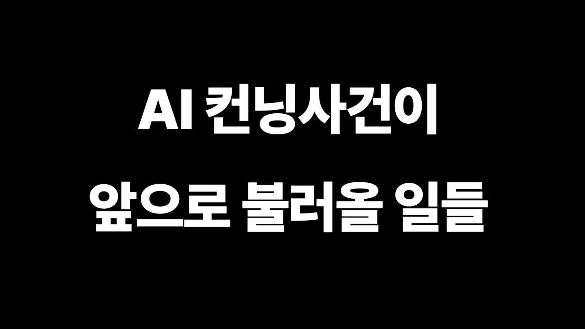
영상의 핵심은 "시험을 더 공정하게" 이전에 "시험이 무엇을 평가해야 하는가"를 묻는 것입니다. 다만 후반의 '한국 선도' 시나리오는 영상 스스로 가능성의 하나라고 밝힌 가설이고, 근거 숫자는 대부분 미검증입니다. [1]
가치 = 문제 해결력(전문성) × 고객 수(접근성). 미슐랭 8×1=8, 엽떡 3×10=30이라는 예시. 점수는 영상의 설명용 숫자이며 실측치가 아닙니다. [원문] [1]
시킨 일을 하는 것이 선, 돈 주는 사람이 진짜 원하는 결과까지 해내는 것이 면. 가계부 앱·고객센터·메뉴판 예시. [구두] [1]
쓸모가 넘치면 '나에게 얼마나 의미 있는가'가 새 기준이 된다는 주장. 후반 대담은 가설이며 시나리오·근거는 미검증. [구두] [1]
읽는 기준: 화면 도해·앱 화면은 영상 제작자가 만든 설명용 그래픽입니다(앱 화면에는 "실제 진단 화면 예시"라는 문구가 보이지만, 실존 서비스인지는 영상에서 확인 불가). 사실 확인은 §12에 따로 정리했습니다. [원문]은 영상 화면에 보인 글자 그대로, [구두]는 화면엔 없고 말로만 한 내용(자동 자막 기반, 한국어 요약은 보고서 정리), [추정]은 작성자가 보완한 부분, 영상에서 확인 불가는 화면·자막으로 확인할 수 없는 곳, 미검증은 영상 속 주장으로 이 보고서에서 따로 확인하지 않은 것입니다. 이 영상은 프롬프트 튜토리얼이 아니라 AI 시대의 가치와 일자리에 대한 해설·대담입니다. 영상의 주장은 모두 채널 운영자(분석좌)와 게스트 '묘수'의 견해로 옮겼습니다. 영상 스스로도 후반부를 "정해진 정답이 아니라 하나의 가능성"이라고 말합니다(27:30). 보고서는 어느 쪽도 보증하지 않습니다. 바로 쓰는 버전은 보고서 제안이며, 영상에 나온 프롬프트가 아닙니다.
분석좌 · 31:43 · 2026.11.27~28 게시. yt-dlp 타임스탬프 기준 2026.11.28 04:58 KST / TubeAlfred 표기 Nov 27, 2026. 두 표기가 하루 차이 나며 정확한 게시 시각은 영상에서 확인 불가. 출연은 진행·해설 분석좌(채널 운영자, 화면 속 고슴도치 캐릭터), 후반 대담 게스트 묘수('묘수의 관점' 채널 운영자, 화면 자막 표기 "묘수의 관점"). 자막은 한국어 자동 생성 자막(TubeAlfred, kind=auto)이고 수동 자막은 없습니다. 수집 시점(2026.11.28 09:09 KST) 참고 수치: 조회수 3,447 · 좋아요 약 200 · 댓글 32 · 채널 구독자 약 11만(yt-dlp 표기). [1]
영상은 클릭한 뒤에만 불러옵니다. 재생이 제한되면 YouTube에서 원영상 시청을 이용합니다. 시간 링크는 https://youtu.be/GbzxI0vh8TQ?t=초 형식입니다. 자막 출처: 한국어 자동 생성 자막(TubeAlfred, kind=auto). 수동 자막 없음. [1]
| 시각 | 챕터 | 링크 |
|---|---|---|
| 0:00 | 시작 | 영상 열기 |
| 0:19 | 시험에 붙은 사람이 더 위험한 이유 | 영상 열기 |
| 2:21 | 지금껏 인간의 가치를 정해온 두 개의 축 | 영상 열기 |
| 3:10 | 나는 점일까, 선일까, 면일까 | 영상 열기 |
| 3:55 | 우리의 가치를 바꾼 세 번의 사건 | 영상 열기 |
| 5:31 | 세 번째 사건 | 영상 열기 |
| 7:04 | 시험이 정말 평가해야 할 것 | 영상 열기 |
| 7:34 | 같은 실력인데 몸값이 갈리는 이유 | 영상 열기 |
| 8:57 | 회사 안에서 면을 그리는 사람 | 영상 열기 |
| 10:17 | 이미 잘렸다면 | 영상 열기 |
| 11:49 | 지금까지 이야기의 반전 | 영상 열기 |
| 12:20 | 새로운 세 번째 축 | 영상 열기 |
| 12:53 | 절대 오해하면 안 되는 것 | 영상 열기 |
| 14:20 | 저도 여기서 막혔습니다 | 영상 열기 |
| 15:31 | 모든 실마리를 풀어준 한 친구 | 영상 열기 |
| 16:00 | 1분 총정리 | 영상 열기 |
| 17:42 | AI시대, 지금껏 아무도 밝히지 못했던 파훼법 | 영상 열기 |
| 18:51 | 하루아침에 종목이 바뀐 세상 | 영상 열기 |
| 20:31 | 측정할 수 없던 것이 측정되는 순간 | 영상 열기 |
| 22:23 | 가치가 되려면 필요한 단 하나의 조건 | 영상 열기 |
| 23:34 | 고래의 말까지 읽는 시대 | 영상 열기 |
| 25:03 | 왜 하필 한국일까? | 영상 열기 |
| 28:03 | 최악의 시나리오 | 영상 열기 |
| 28:45 | 한국이 세계에 팔 수 있게 될 것 | 영상 열기 |
| 30:14 | 그래서 우리는 뭘 해야 할까 | 영상 열기 |
| 30:53 | 마무리 | 영상 열기 |
영상 설명란에는 "바쁘시면 이 구간(15:31)만큼은 꼭 봐주세요"라는 안내도 있습니다. 15:31부터가 게스트 '묘수'와의 대화로 이어지는 구간입니다. [1]
아래는 영상의 주장을 일곱 줄로 모은 것입니다. 숫자는 영상이 든 설명용 숫자이거나, §12에서 따로 확인한 범위를 넘지 않습니다. [1]
인용 (자동 자막 원문) — "진짜 위험한 건 떨어진 사람이 아니라 정정당당하게 붙은 사람이라는 거예요." 0:33
인용 (자동 자막 원문) — "자율주행 차밖에 없는 세상에서 전 재산을 털어서 택시를 사게 되는 거죠." 1:32
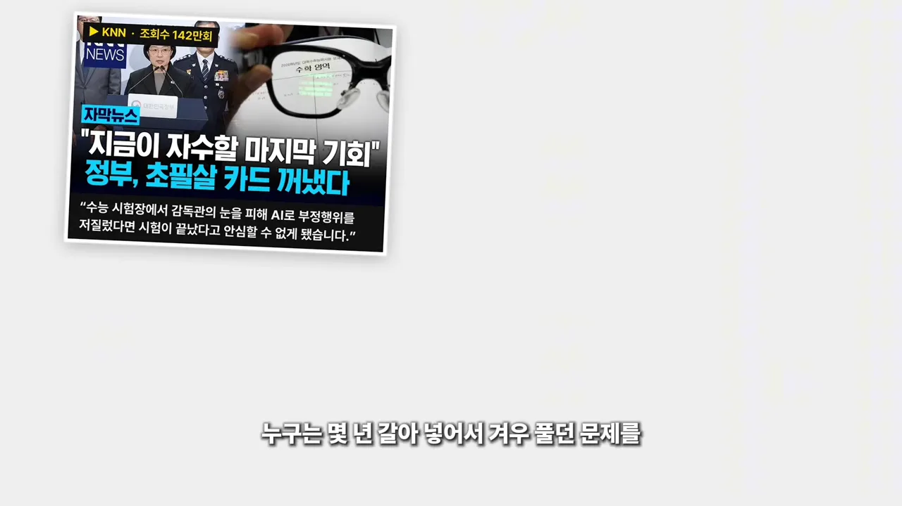
KNN · 조회수 142만회 자막뉴스 "지금이 자수할 마지막 기회" 정부, 초필살 카드 꺼냈다 (하단 부제는 작아 일부만 판독: "…수능 시험장에서 감독관의 눈을 피해 AI로 부정행위를 저질렀다면 시험이 끝났다고 안심할 수 없게 …" — 끝부분은 영상에서 확인 불가)
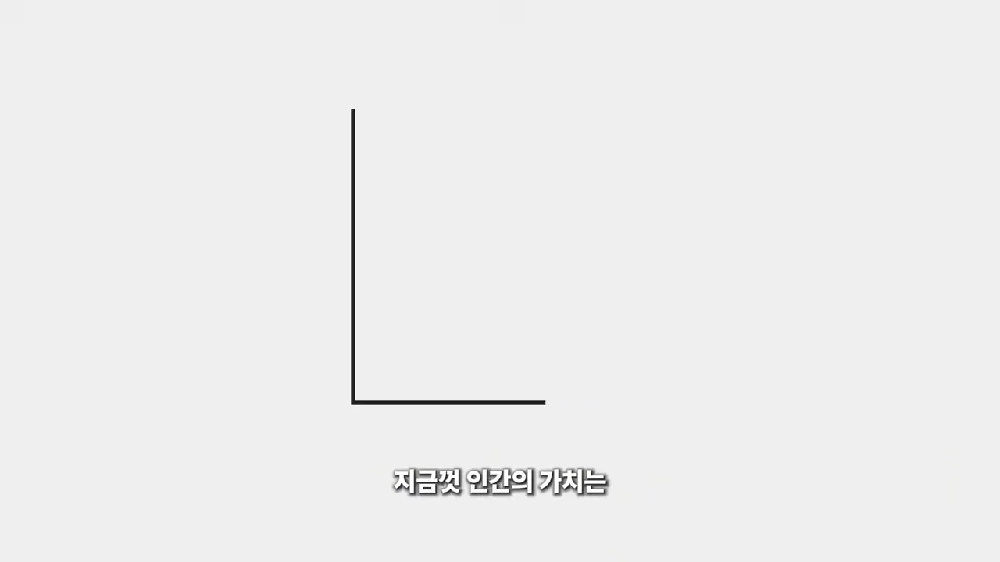
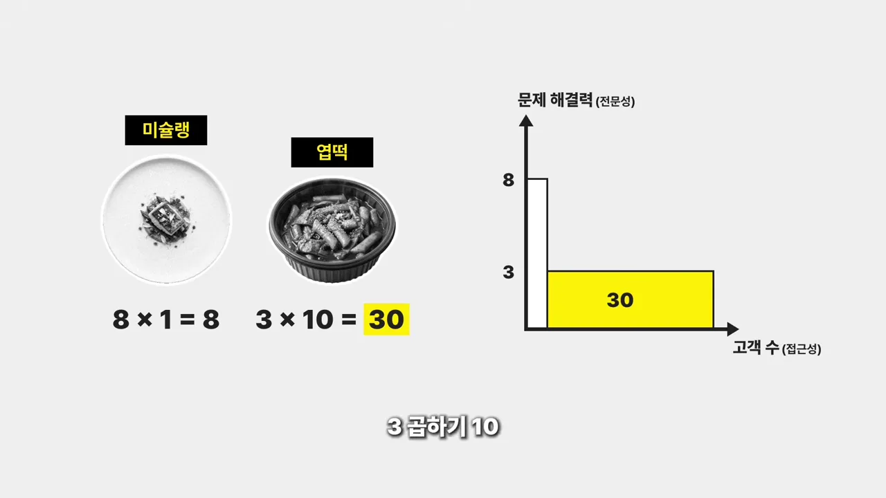
미슐랭 8 × 1 = 8 엽떡 3 × 10 = 30 (30 강조 표시)
[구두] 미슐랭 식당은 요리 실력(문제 해결 능력)이 8점이지만 예약이 어렵고 비싸 접근성이 1점, 엽떡은 문제 해결 능력 3점에 전국 배달로 접근성 10점이라 면적이 30으로 "압승"이라는 예시입니다. 영상은 "이해를 돕기 위해 돈 버는 공식 하나로만 따진 것"이라고 단서를 답니다(2:55 부근). 점수는 영상의 설명용 숫자이며 실측치가 아닙니다. [1]
| 순서 | 사건 | 영상의 설명 | 링크 |
|---|---|---|---|
| 1 | 신분제의 붕괴 | 누구든 공부해 전문성을 쌓으면 가치를 높일 수 있게 됨(점→선). 성공 공식: "세로선을 어떻게든 키워라" | 3:55 |
| 2 | 인터넷 | 접근성(가로축)이 열려 전국·전 세계에 팔 수 있게 됨(선→면). 유튜버·쇼핑몰 1인 기업 | 4:07 |
| 3 | AI의 등장 | 몇 년 갈아넣어야 그릴 수 있던 긴 선을 누구나 짧은 시간에 그릴 수 있게 됨. 가로축(콘텐츠·광고·고객 응대)도 AI로 혼자 자동화 가능 | 5:30 |
[구두] 제빵사 비유: 빵을 잘 굽는 사람(세로선이 긴 사람)이 1인 브랜드를 만들면 인스타·스마트스토어·택배·CS·광고까지 해야 하므로 "빵은 대체 언제 구워요?" 하게 되고, 그래서 대부분은 회사의 면을 채우는 직장인을 택했다는 설명입니다(4:28). [1]
인용 (자동 자막 원문) — "선은 시킨 일을 하는 거예요. 하지만 면은 나한테 돈 주는 사람이 진짜 원하는 결과까지 해내는 거예요." 7:35
인용 (자동 자막 원문, 오인식 [ ]로 교정) — "돌을 나르는 건 AI가 기가 막히게 잘 쌓[아요]. 근데 이 성이 누구를 위해 왜 만들었는지까지 알고 성을 쌓는 것은 아직까진 사람 몫입니다. 물론 이것도 나중에 대체될 수가 있겠지만요. 현재로서는 그렇다 겁니다." 8:33~8:53, 마지막 문장은 자막 그대로
[구두] 선을 그리는 개발자는 "가계부 앱 하나 만들어 주세요"라는 외주를 받아 지출 입력·그래프 앱을 만들고 끝납니다. 이는 AI에게 몇 마디 하면 몇 분 만에 나오므로 몸값이 떨어진다고 합니다. 면을 그리는 개발자는 "사람들이 가계부를 쓰는 진짜 이유는 돈을 모으려는 것"이라 보고, 카드를 연동해 3개월째 안 본 OTT 구독·앱 구독·비싼 통신 요금제를 찾아 버튼 한 번에 해지·변경해 주는 가계부를 만든다는 예시입니다. "다음 달부터 매달 5만 원이 그냥 절약"(자막)된다고 말합니다(8:13). [1]
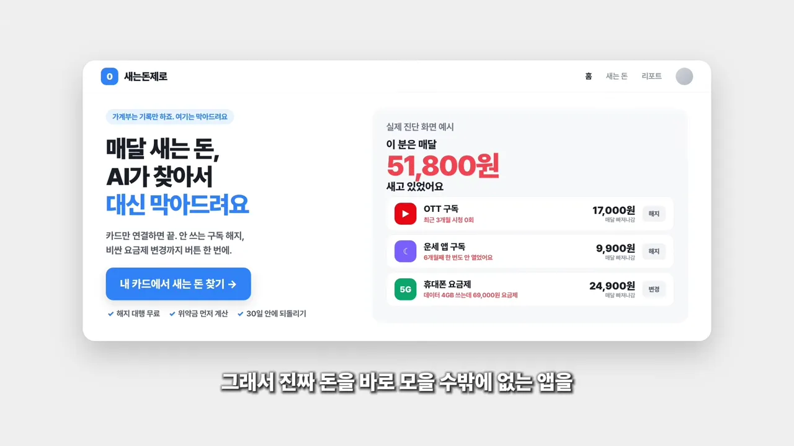
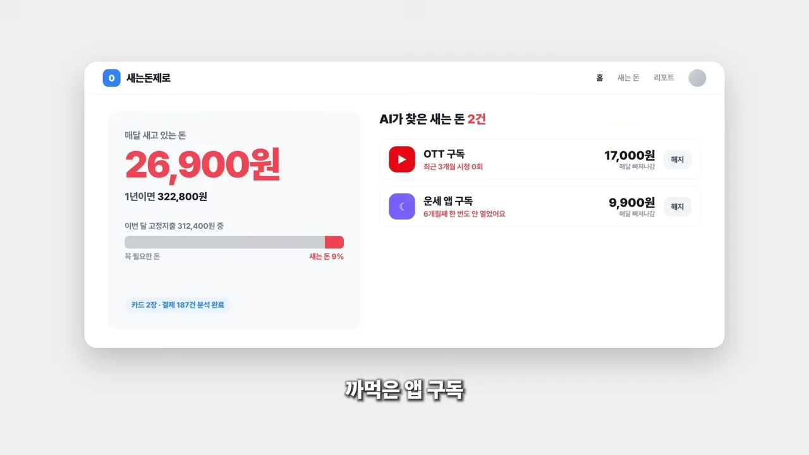
새는돈제로 홈 새는 돈 리포트 가계부는 기록만 하죠. 여기는 막아드려요 매달 새는 돈, AI가 찾아서 대신 막아드려요 카드만 연결하면 끝. 안 쓰는 구독 해지, 비싼 요금제 변경까지 버튼 한 번에. [내 카드에서 새는 돈 찾기 →] ✓ 해지 대행 무료 ✓ 위약금 먼저 계산 ✓ 30일 안에 되돌리기 실제 진단 화면 예시 이 분은 매달 51,800원 새고 있었어요 OTT 구독 최근 3개월 시청 0회 17,000원 [해지] 운세 앱 구독 6개월째 한 번도 안 열었어요 9,900원 [해지] 휴대폰 요금제 데이터 4GB 쓰는데 69,000원 요금제 24,900원 [변경] (각 금액 아래 작은 글씨 "매달 빠져나감"으로 보임)
새는돈제로 매달 새고 있는 돈 26,900원 1년이면 322,800원 이번 달 고정지출 312,400원 중 꼭 필요한 돈 ········ 새는 돈 9% 카드 2장 · 결제 187건 분석 완료 AI가 찾은 새는 돈 2건 OTT 구독 최근 3개월 시청 0회 17,000원 [해지] 운세 앱 구독 6개월째 한 번도 안 열었어요 9,900원 [해지]
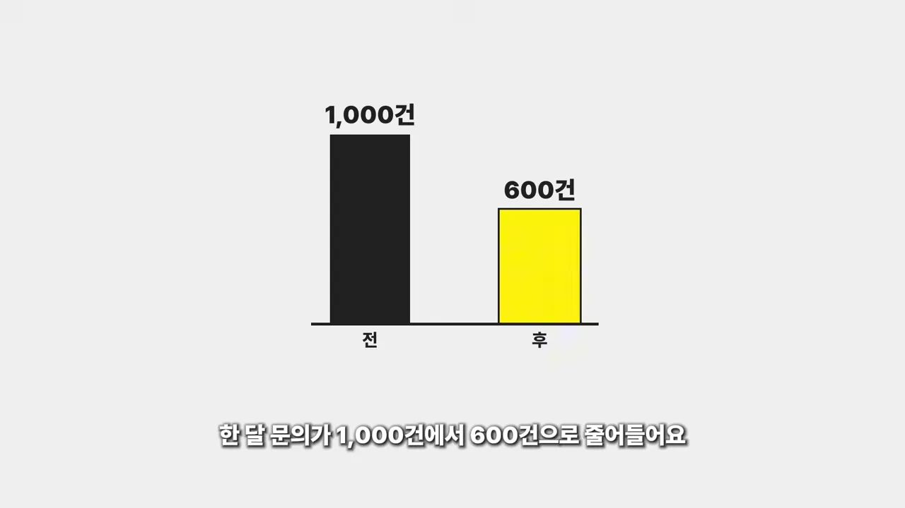
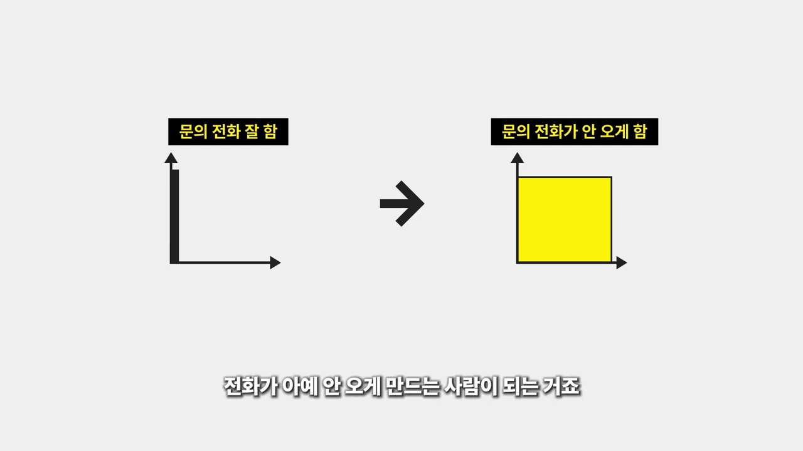
문의 3,000건 → AI 회원가입이 안 돼요 (사람 아이콘 10개 중 4개 강조) 막대그래프: 전 1,000건 / 후 600건 문의 전화 잘 함 → 문의 전화가 안 오게 함
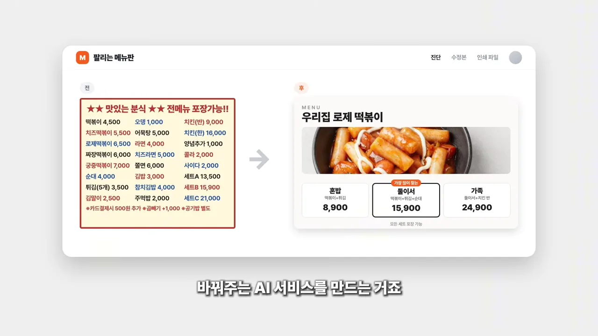
팔리는 메뉴판 진단 수정본 인쇄 파일
전: ★★ 맛있는 분식 ★★ 전메뉴 포장가능!!
떡볶이 4,500 / 오뎅 1,000 / 치킨(반) 9,000 …
※카드결제시 500원 추가 ※곱빼기 +1,000 ※공기밥 별도
후: MENU · 우리집 로제 떡볶이
혼밥 (떡볶이+튀김) 8,900
둘이서 (떡볶이+튀김+순대) 15,900 — "가장 많이 찾는" 표시
가족 (둘이서+치킨 반) 24,900
모든 세트 포장 가능영상은 이 대목에서 "만드는 건 AI가 다 해 주니 오히려 파는 게 진짜 실력을 보여주는 시대"라고 말하고(11:32), "이 영상이 조회수 10만을 넘기면 서비스를 직접 만들어 최소 1만 원 혹은 사용자 100명이라도 만드는 과정을 공개해 볼까 한다"고 제안합니다(11:20~11:41). 약속이 아니라 조건부 제안입니다.
인용 (자동 자막 원문) — "쓸모가 넘쳐날수록 나한테 얼마나 의미 있는가. 이것이 바로 새로운 가치의 기준이 될 수 있겠다라는 생각이 듭니다." 12:45
[구두] "절대 오해하면 안 되는 것" (12:53): "AI 쓰지 말고 인간다움을 지켜서 의미를 살려라"가 아니라 오히려 정반대이며, AI를 써서 의미를 제대로 전달할 수도 있다고 말합니다.
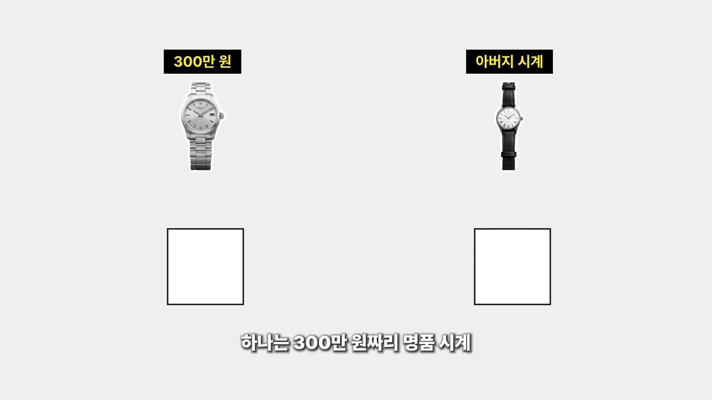
300만 원 아버지 시계 (각 시계 아래 빈 정사각형 도형 두 개)
[구두] 운동 기록·식단 분석·맞춤 추천은 기본 옵션이 된 헬스 앱을 가정합니다. 의미가 들어간 앱은 "AI의 초개인화 서비스로 의미를 제공"한다는 예시입니다. 운동하는 이유가 근육이 아니라 "아이들과 오래 함께하고 싶어서"인 사용자에게, 시작할 때 이유를 구체적으로 적게 하고, 운동이 끝나면 "오늘 운동 덕분에 아이들과 함께할 시간이 두 시간 더 늘어났습니다"라고 말해 주며, 사진첩의 아이 사진과 AI로 생성한 10년 뒤 장면까지 붙여 운동을 하나의 서사로 만든다는 설명입니다(13:03~13:43). [1]
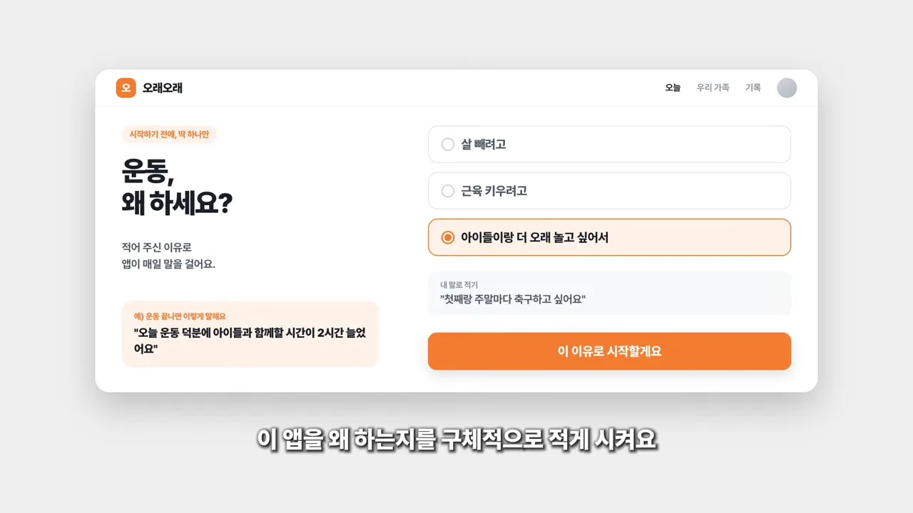
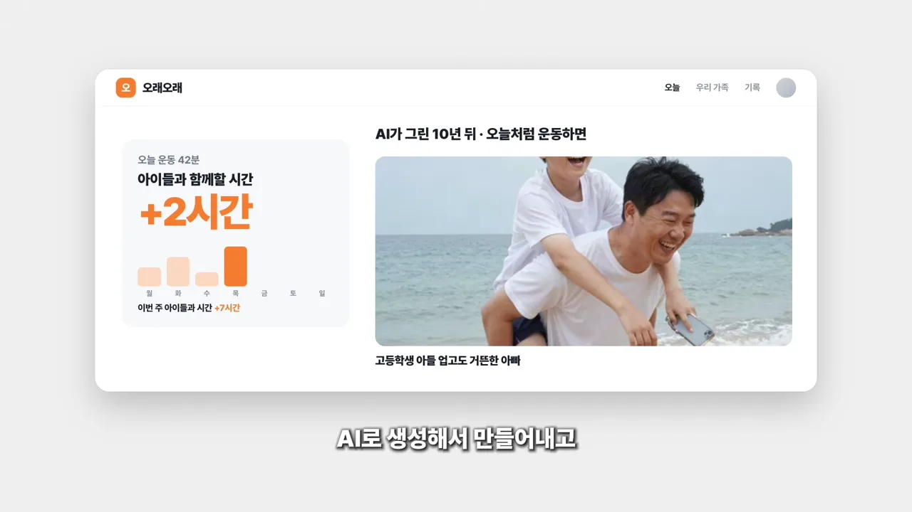
오래오래 오늘 우리 가족 기록 시작하기 전에, 딱 하나만 운동, 왜 하세요? 적어 주신 이유로 앱이 매일 말을 걸어요. 예) 운동 끝나면 이렇게 말해요 "오늘 운동 덕분에 아이들과 함께할 시간이 2시간 늘었어요" ( ) 살 빼려고 ( ) 근육 키우려고 (●) 아이들이랑 더 오래 놀고 싶어서 내 말로 적기: "첫째랑 주말마다 축구하고 싶어요" [이 이유로 시작할게요]
오늘 운동 42분 아이들과 함께할 시간 +2시간 (요일별 막대: 월 화 수 목 금 토 일, 목요일 강조) 이번 주 아이들과 시간 +7시간 AI가 그린 10년 뒤 · 오늘처럼 운동하면 고등학생 아들 업고도 거뜬한 아빠
구간은 14:20~20:31입니다. 15:31부터가 게스트 묘수와의 대화입니다. [1]
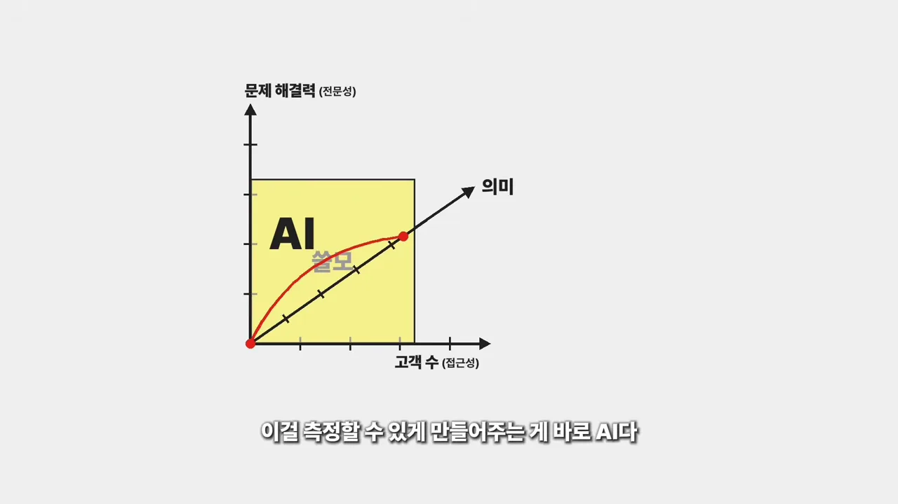
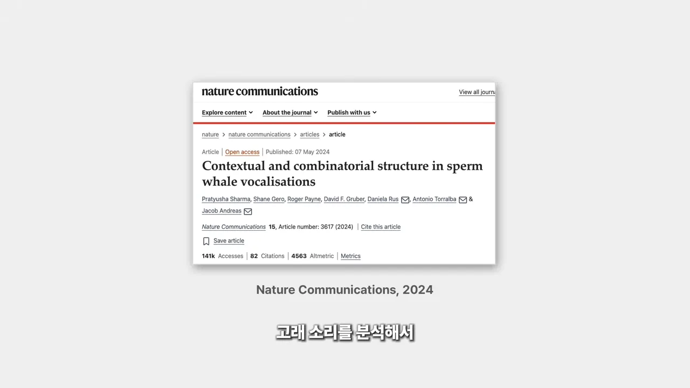
nature communications Article · Open access · Published: 07 May 2024 Contextual and combinatorial structure in sperm whale vocalisations Pratyusha Sharma, Shane Gero, Roger Payne, David F. Gruber, Daniela Rus, Antonio Torralba & Jacob Andreas Nature Communications 15, Article number: 3617 (2024) Nature Communications, 2024 (화면 하단 캡션)
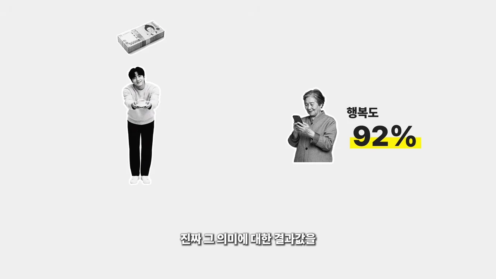
행복도 78% (놀기만 한 경우, 자막 "제가 띵가띵가 놀아요") 행복도 92% (진심으로 돌본 경우, 자막 "진짜로 의미를 실현해야만")
구간은 25:03~28:45입니다. 아래 시나리오는 묘수의 가설이며, 보고서는 보증하지 않습니다. [1]
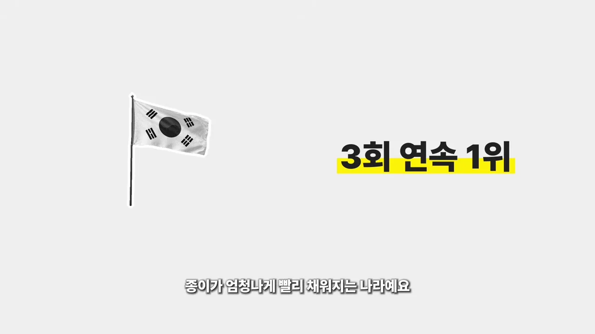
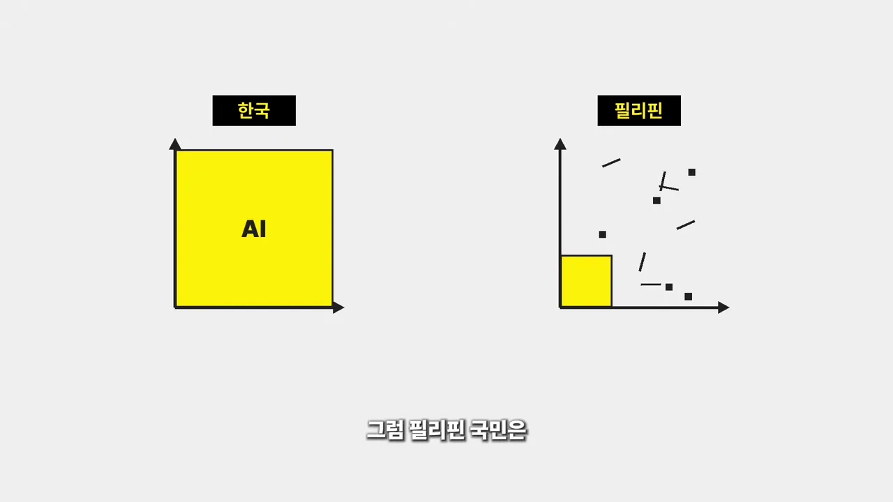
3회 연속 1위 한국 AI 필리핀
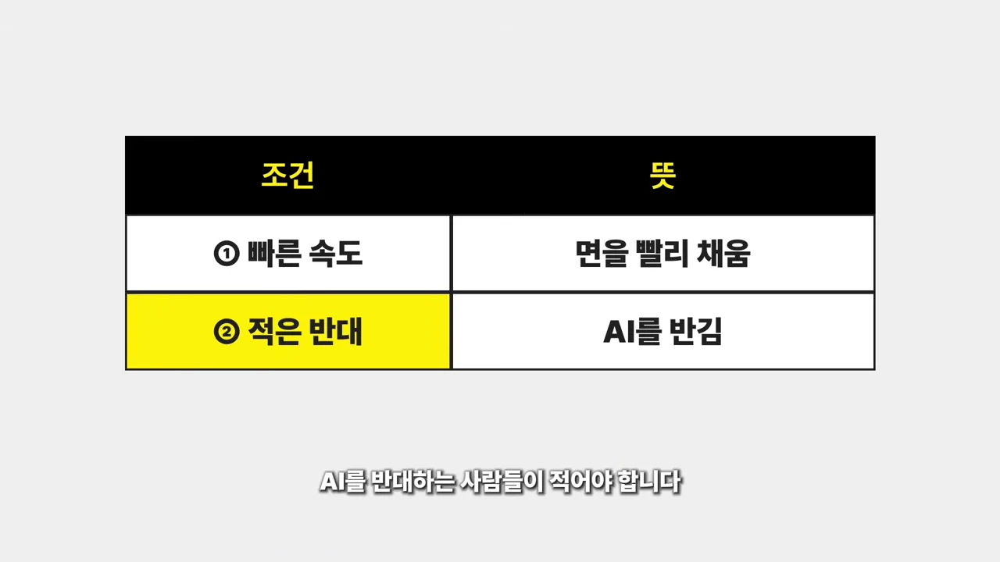
| 조건 | 뜻 |
|---|---|
| ① 빠른 속도 | 면을 빨리 채움 |
| ② 적은 반대 | AI를 반김 |
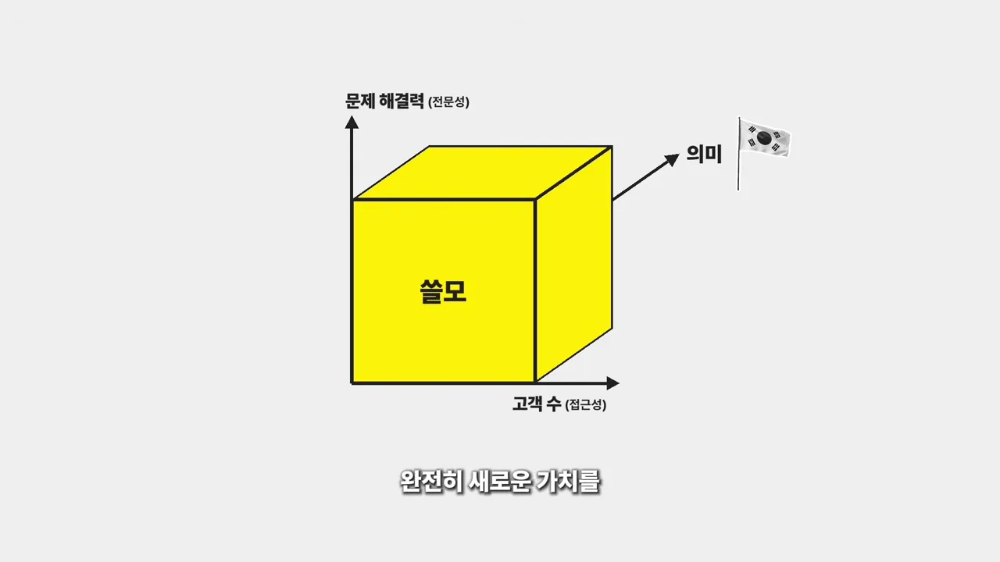
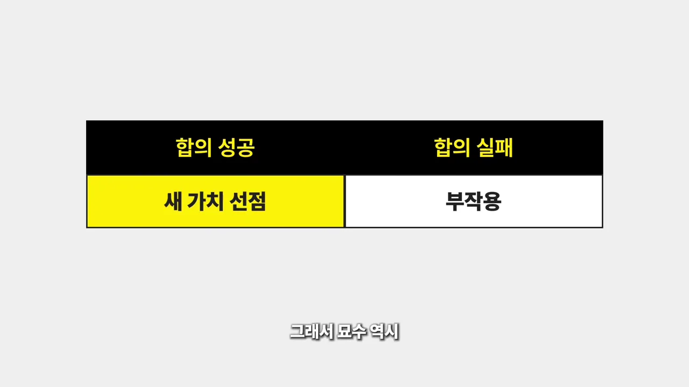
| 합의 성공 | 합의 실패 |
|---|---|
| 새 가치 선점 | 부작용 |
인용 (자동 자막 원문) — "묘수 역시 반드시 이렇게 해야 되는 정답이 아니라 하나의 가능성일 뿐이고 그렇게 하지 못했을 때 부작용도 분명히 존재한다고 이야기하죠." 27:30
영상이 말하는 최악: 서로 싸우기만 하며 합의를 못 이끌어내고, AI가 쓸모 종이를 다 차지하는데 한국의 AI는 의미를 측정할 만큼 발전하지 못한 상태. 쓸모는 잃고 의미의 축은 안 열려 가치를 전부 잃고, 부는 AI를 가진 소수에게 집중되는 "2차원에 갇힌 디스토피아"입니다(28:03). 묘수 측 표현으로는 "자동화로 생긴 부가 소수한테만 가고, 측정 못 하는 가치가 계속 외면받아 출산율·돌봄이 무너지는 케이스"가 최악입니다(27:40).
인용 (자동 자막 원문) — "우리 각자 개인이 해야 되는 거는 … 우리가 지금 앞으로 당면한 문제들 이거 어떻게 풀 건지 그거 고민해야 되는게 우리의 책임이라 생각하거든." 30:04~30:25, 말줄임 … 표시. 발언자는 게스트 묘수로 보임 [추정]
2026.11.28 기준입니다. 판정은 확인한 범위만 적었습니다. 영상 속 설명용 숫자는 이 표의 대상이 아닙니다. [1]
| # | 영상의 말·화면 | 확인한 내용 | 판정 | 출처 |
|---|---|---|---|---|
| 1 | "AI 컨닝 사태" (0:00, 뉴스 화면 0:20) | 세무사 시험 수석 합격자가 초소형 카메라로 문제를 찍어 생성형 AI에 보내 답을 확인했다고 시인(2026.11.15, 서울경찰청 자수서). 이후 다른 시험 고득점자들에게도 의혹이 번졌으나 LEET 첫 전 영역 만점자 등에 대해서는 증거가 제시되지 않았음(11.16 기사 기준). | 사건 자체는 확인됨. 확산된 개별 의혹은 증거 미제시 | [2] [3] |
| 2 | "국가 공인 시험인 리트와 수능에서 AI로 컨닝이 일어난 사건" (5:51~6:11) | 올해 7월 LEET에서 수험생 1명이 AI 스마트안경으로 적발됨. 2027학년도 수능(11.19)에서는 스마트기기 부정행위 111건이 적발됐고, 시험 중 실제 사용은 5건(스마트안경 1건 포함). 천안 스마트안경 수험생은 수학 시험에서 사용을 시인하고 입건됨. | 부분 확인. '리트·수능 전반의 컨닝'이 아니라 적발된 개별 사례와 111건의 반입 적발이 확인된 범위 | [4] [5] [6] |
| 3 | "리만 가설까지 최근에 풀렸다는 이야기가 나오고 있죠. … AI가 몇 초 만에 풀어 버립니다" (5:51) | 2026.11.20 Levent Alpöge가 Claude의 도움으로 만든 Lean 증명을 발표(alpo.ge/remark.pdf). 11.21 Lean FRO·Mathlib Initiative가 "진술과 증명이 맞다"고 인증. MIT Andrew Sutherland 등이 독립적으로 컴파일·재검증(175,187개 모듈). MIT 검증 페이지에는 11.25에 더 짧은 Lean 증명이 따로 공개됐다는 안내도 있음. 사람이 읽는 논문 검토와 클레이 상금 판정은 Report Hub 기존 리포트(11.24 기준)에서는 미정이었고, 이번에 다시 확인하지는 않음. '몇 초 만에'는 이번에 확인한 자료에서 찾지 못했고, 검증 쪽만 해도 Lean 기본 커널 48시간·paranoid 커널 72시간 등이 걸렸다고 기록됨(생성에 걸린 시간은 확인 불가). | "풀렸다는 이야기" 부분은 사실. '몇 초 만에'는 근거 못 찾음 | [7] [8] [9] |
| 4 | "생성형 AI 사용률 증가 속도가 주요국 중 세 번 연속 1위" (26:31) + 화면 "3회 연속 1위" | 마이크로소프트 AI Economy Institute 2026년 2분기 보고서: 한국 생성형 AI 사용자 비중(15~64세 추정) 40.6%(6월), 직전 분기 대비 +3.5%p, 3회 연속 주요 경제권 중 최대 상승폭, 순위 16위→12위. | 사실. 단, '증가폭 1위'이지 '사용률 1위'가 아님(1위는 UAE 73.3%) | [10] |
| 5 | 화면의 논문 캡처 "Nature Communications, 2024" (23:37) 와 "알파벳 같은 구조", "무슨 대화를 하는지 유추할 수 있다는 가능성" (23:36) | 논문은 실재: Sharma 외, Nature Communications 15:3617, 2024.05.07. 향유고래 codas의 문맥적·조합적 구조(rhythm, tempo, rubato, ornamentation)를 보였음. 논문 본문은 "call의 의미(semantics)를 규명하거나 플레이백 실험을 한 것이 아니다"라고 한계를 밝힘. | 논문은 사실. '무슨 대화를 하는지 유추'는 논문 범위를 넘는 해석(영상은 '가능성'이라고 표현) | [11] |
이번에 확인하지 않은 주요 주장은 §14에 따로 적었습니다(한국 인구·AI 반대 정도, 철도 국유화, 팔란티어 접근, 사례 속 숫자 등).
리만 가설 관련 상세 정리는 Report Hub의 별도 리포트 「AI 리만 가설이란? AI와 함께 나온 증명, 어디까지 확인됐나」를 참고하세요. [12]
아래 두 블록은 보고서 제안입니다. 영상에 나온 프롬프트가 아닙니다. 영상에는 프롬프트가 나오지 않습니다.
원문(영상 근거): "선은 시킨 일을 하는 거예요. 하지만 면은 나한테 돈 주는 사람이 진짜 원하는 결과까지 해내는 거예요." (7:35) / 고객센터 예시: 시킨 일 = 전화를 잘 받는 것, 진짜 원하는 것 = 전화가 안 오게 하는 것. (9:14) [1]
다음은 제 업무입니다. - 직무/역할: [예: 고객센터 상담원] - 지금 시키는 일(반복 업무): [예: 문의 전화를 친절하고 빠르게 받기] - 이 일을 시키는 사람(상사/고객)이 얻고 싶은 숫자: [예: 문의 건수 감소, 매출, 비용] 아래 순서로 정리해 주세요. 1. 제가 시킨 일만 하고 있을 때(선)와 진짜 원하는 결과까지 해낼 때(면)의 차이를 표로 비교 2. 진짜 원하는 결과에 도달했는지 확인할 수 있는 지표 3가지와, 각 지표를 어디서 어떻게 구할 수 있는지 3. 이번 달 안에 혼자 해 볼 수 있는 작은 실험 1개 (필요한 데이터, 단계, 예상 소요 시간) 4. 결과를 숫자로 남기는 기록 양식 (전/후 비교 형태) 모르는 정보는 추측하지 말고 "추가로 필요한 정보"로 따로 적어 주세요.
원문(영상 근거): "쓸모가 넘쳐날수록 나한테 얼마나 의미 있는가. 이것이 바로 새로운 가치의 기준이 될 수 있겠다라는 생각이 듭니다." (12:45) / 헬스 앱 예시: 시작할 때 "이 앱을 왜 하는지"를 구체적으로 적게 하고, 결과를 그 이유에 맞춰 말해 줌. (13:23) [1]
제가 만들려는 서비스/업무 결과물은 다음과 같습니다. - 기능(쓸모): [예: 운동 기록과 식단 분석] - 사용자: [예: 40대 직장인 아빠] - 사용자가 이걸 하는 진짜 이유 후보: [예: 아이들과 오래 놀고 싶어서 / 건강 검진 수치가 걱정돼서] 다음을 만들어 주세요. 1. 사용자가 시작할 때 "왜 하세요?"라고 묻는 질문 문구 3가지 (선택지 + 직접 쓰기) 2. 사용자가 적은 이유를 결과 화면에 되돌려 주는 문장 템플릿 5가지 (변수 자리는 [ ]로 표시) 3. 이 '의미 문장'이 실제로 효과가 있는지 확인할 간단한 측정 방법 3가지 (재방문율, 응답 선택 비율 등) 주의: 실제 데이터가 없는 숫자나 효과는 만들어 내지 말고, 모든 수치는 [예시]라고 표시해 주세요.
아래는 영상 속 주장으로, 이 보고서에서 따로 확인하지 않았거나 화면·자막으로 확인할 수 없는 항목입니다. 검증된 사실로 읽지 않습니다.
| 항목 | 상태 | 비고 |
|---|---|---|
| 영상 속 앱 '새는돈제로', '팔리는 메뉴판', '오래오래'가 실존 서비스인지 | 영상에서 확인 불가 | 화면에 "실제 진단 화면 예시" 문구는 있으나 서비스 존재 확인은 못 함. 설명용 목업으로 보임 [추정] |
| 고객센터 사례 3,000건·10명 중 4명·1,000→600건 | 미검증 (가상 사례) | 영상이 "예를 들어"로 든 숫자. 실제 출처 없음 |
| 미슐랭 8점·엽떡 3점·접근성 1/10점, 행복도 78%/92% | 미검증 (설명용 숫자) | 실측치 아님 |
| "한국은 인구가 적어 AI를 반기기 쉽다", "한국은 AI 반대가 상대적으로 적다" (25:18~26:58) | 미검증 | 묘수의 가설. 인구 규모나 AI 수용도 비교 자료는 확인하지 않음. 한국의 인구 감소·노동력 부족과 AI 도입 거부감의 관계도 확인하지 않음 [추정: 가설의 핵심 전제] |
| "한국은 AI가 쓸모 종이를 가장 빨리 채우는 나라" | 해석 구분 필요 | 확인한 지표(MS 보고서)는 생성형 AI 사용자 비중 상승폭일 뿐 '일자리 대체 속도'가 아님 [추정] |
| 철도 회사 '국유화', 인터넷 인프라 vs 서비스 기업 수익 비교 (28:45~29:23) | 미검증 | 일반론으로 제시된 역사 비유. 사례·수치 없음 |
| "팔란티어의 접근이긴 했는데" (20:31 부근, 묘수 발언) | 미검증 | 어떤 접근을 가리키는지 영상에서 설명 없음 → 영상에서 확인 불가 |
| '6개월 전부터 점·선·면을 생각했다' (30:53) | 미검증 | 화자 본인 진술 |
| 5:51 "몇 초 만에 풀어 버립니다"(리만 가설) | 근거 못 찾음 | §12 3번 |
| 영상 말미 멤버십·'다음 영상' 약속 | 영상에서 확인 불가 | 홍보성 내용. 다음 영상 존재 여부는 확인하지 않음 |
| 영어 자동 자막(en)의 정확성 | 사용 안 함 | 한국어 자동 자막만 사용. 영어 트랙은 한국어 음성의 자동 번역으로 보이며(추정) 인용하지 않음 |
| 영상 속 인용 뉴스(KNN 자막뉴스) 방송 시기 | 영상에서 확인 불가 | 화면에 날짜가 없음 |